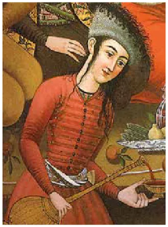

Chapter 1 · Brief overview of the history of viticulture in Portugal
Islamic Legacy and Viticulture
After the fall of the Roman and Visigoth Empires, the new Islamic rulers introduced restrictions on the trade in wine, which at that time was flourishing in France and Germany. The Christian Church, with its need for sacramental wine, even outside of wine growing areas, was an important factor in this development.
With the Islamic conquerors came laws that subjected the consumption of wine to conditions hitherto unknown. The consequences of these restrictions will be explored here. First, it should be mentioned that the ramifications of these political waves of Islamic fundamentalism were less noticeable in Portugal, which was located geographically on its margins. With the Islamic conquest in the seventh century AD, a substantial portion of the vineyards in the Orient and North Africa was destroyed. It was therefore likely that a large part of the Vitis vinifera cultivars and populations was lost.
One must also bear in mind that this was where the gene pool of Vitis vinifera orientalis Negr. existed: it consisted primarily of aromatic large-berry varieties, some of which were even seedless. Because of their physiological configurations, these varieties were ideally suited to the hot climate of the Islamic world (Turkovíc, 1961: 88).
The first four Orthodox Caliphs (the fathers-in-law of the Prophet Mohammed, Abu Bakr and ‘Umar, and then his sons-in-law, ‘Uthman and ‘Ali), resulted in the first Islamic dynasty, the Umayyad, which elected Damascus as its capital city. Previously, in 132 AH/AD 749, this had given the Abbasids grounds to depose the Umayyad as Caliph, to kill them all – with one exception – and to make Baghdad their capital. The sole survivor was an uncle of the last Umayyad Caliph, Hixam, who managed to flee and finally moved to Al-Andalus. He became the first Emir Abu’l-Mutarrif ‘Abd al-Rahman I.
The Umayyad were tolerant of the culture and customs of the peoples whom they had subjugated. Peñin (2008: 135) refers to the fact that the Umayyad Caliph Abd el Rachman III was accustomed to drinking wine at his court, and tolerated it in others as long as it was in moderation. One sign of vineyards existing in southern Andalusia is sherry, which the Spanish author Oliver Asín (Peñin 2008: 233) says comes from the word “Sherez” from the Arabic settlement at Seris.


Obviously, consumption of wine did not stop, even in Islamic Andalusia. And there was no shortage of excess either. Carvalho (1912: 15) writes about the Emir Abu’l- ‘Asi Al–Hakam I, who ruled between 206 and 238 AH/ AD 822-852, “In order to recover from the hardships of war, he circumvented the precepts and prohibitions of the Qur’an, and gave himself up to extravagant dinner parties, where dessert wines flowed in abundance.” In addition to table grapes and the private consumption of wine, raisins were also common (in Portuguese: azibebe, a word which comes from the Arabic, azebibe = raisin) and were offered to visitors, or given to those suffering from loss of appetite, according to Sousa (1830: 8). Together with the table grape, they were a fixed part of Islamic culture, a phenomenon to which the survival of Portuguese Vitis vinifera gene pool owes its gratitude.
There are few references to the important religious leader and politician, Ahmed Ibn Qasi, founder and governor of the intermediate Taifa of Mértola. One interesting exception, if indeed it does come from this leader, is a quirate from Mértola with a clear mint mark and a cluster of grapes on the obverse.
Even on the small silver quirates (coins) of the Almoravid one finds depictions of raisins and clusters of grapes, as was the case with Ibn Wazir, who was King of the Évora Taifa briefly from 540 AH/AD 1146.
Yet one cannot overlook the fact that viniculture continued to decline under Almohad rule, a trend that was less marked in Portugal. Their fundamentalism was the last defence against the religious and military decline of the Iberian Muslims and the Almoravids. The Almohad’s supremacy, from 1147 to 1269, was limited in time, however, and began to lose its foothold with the Battle of Las Navas de Tolosain July 1212. With the help of the Crusaders, the reconquest of Portugal continued during this time.
Ultimately, this tradition continued for over three decades. Marques de Carvalho (1912: 15) mentions that, “In 1147, when Afonso Henriques captured Lisbon, it could be ascertained already at this time, wine, salt and fruit were the most important products in and around Lisbon.” In Silves
Castle: from the first Almoravid dynasty until the first Chris-
tion of Fridays (the Muslim holy day, with an obligatory visit to the mosque), I did not know to what extent his steadfastness against the enjoyment of wine would show.”
In conclusion, one can say that although the consumption of wine contradicts the precepts of the Qur’an, viniculture was practised particularly in Andalusia, but also in Portugal, throughout all periods of Islamic rule. Thus, the old grapevine varieties were able to survive, whilst the genetic spectrum was broadened by the introduction of new Arab varieties.